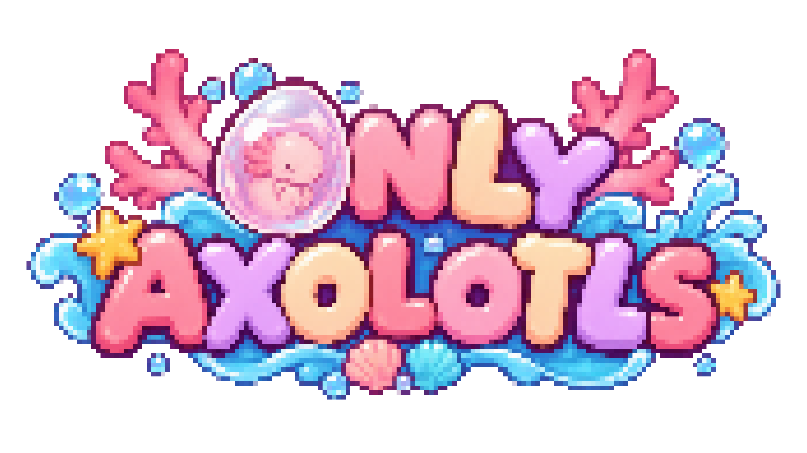

OFFICIAL GAME GUIDE
Only Axolotls
Everything you need to know about your aquarium, axolotls, breeding, battles, progression and probabilities.
How Only Axolotls Works
Only Axolotls is built around collecting, breeding and developing axolotls. Each axolotl is made from 8 individual pieces. Pieces have their own rarity and can contribute statistics, effects or special abilities.
8 Pieces
Every axolotl is assembled from eight independently determined pieces.
6 Rarities
Common, Uncommon, Rare, Epic, Legendary and Xólotl.
Progression
Aquarium levels unlock new axolotls, seeds, capacity and expansions.
Combat
Pieces can grant statistics and status effects that shape how axolotls perform.
Breeding & Piece Inheritance
When two axolotls reproduce, every one of their eight pieces is resolved independently.
For each piece, there is a 35% chance to inherit the mother's piece, a 35% chance to inherit the father's piece, and a 30% chance that the piece mutates.
Mutation rarity
If both parent pieces have the same rarity, a mutation is guaranteed to use that rarity. If their rarities differ, the mutation distributes its chance evenly across every rarity step between the two pieces, including both endpoints. The resulting piece is then selected randomly from the chosen rarity.
Gender at birth
Every newborn axolotl has a 50% chance to be female and a 50% chance to be male.
Breeding Time & Gem Cost
The highest rarity among the two parent pieces determines both the breeding/hatching time and the number of gems required to skip the event.
| Highest rarity | Time | Skip cost |
|---|---|---|
| Common | 1 day | 1 gem |
| Uncommon | 1 day | 2 gems |
| Rare | 2 days | 3 gems |
| Epic | 2 days | 4 gems |
| Legendary | 3 days | 5 gems |
| Xólotl | 3 days | 6 gems |
Coins
Coins are the main currency used for several progression-related systems. They are required to maintain your aquarium, purchase seeds and unlock additional growing space.
How to earn Coins
Coins can be obtained through several activities:
- Winning battles.
- Completing axolotl sets.
- Harvesting fully grown phytoplankton plants.
Breeding cost
Coins are required to allow two axolotls to reproduce. The cost depends on the rarities of all eight pieces of the mother and all eight pieces of the father. The rarities of both parents are considered together when calculating the final breeding cost.
Other uses
Coins can also be spent on useful progression-related purchases, including seeds from the Seed Shop and additional pot slots for growing phytoplankton.
Gems
Gems are a premium progression resource used exclusively to accelerate ongoing game processes.
How to earn Gems
- Unlocking a piece gives 1 gem.
- Every axolotl level-up gives 1 gem.
- Completing a star level for the first time gives 1 gem.
How Gems are spent
Gems can be used to instantly complete or accelerate the following processes:
- Breeding — accelerate an ongoing reproduction.
- Egg hatching — instantly complete the egg's remaining time.
- Plant growth — instantly finish the remaining growth time of a plant.
- Seed Shop refresh — instantly refresh the shop instead of waiting for its normal reset.
Phytoplankton, Food & Growth
Each harvest produces 2 phytoplankton of the planted crop. An axolotl needs 2 units of its required plant food to level up. Every additional level requires 2 more units than the previous level.
Each axolotl starts with a base stay duration of 10 days. Every level adds 4 days to that duration.
Favourite food
Each of the 8 pieces independently has a 12.5% chance of assigning the crop associated with that piece's set as the axolotl's favourite food. This can make an axolotl with high-rarity pieces easier to feed than expected.
Seed unlocks
| Aquarium | Seed |
|---|---|
| 1 | Algae |
| 2 | Potatoes |
| 3 | Corn |
| 4 | Coral |
| 5 | Tomatoes |
| 6 | Wheat |
| 8 | Onions |
| 10 | Carrots |
| 12 | Bananas |
| 14 | Beans |
| 16 | Strawberries |
| 18 | Oranges |
| 20 | Grapes |
| 22 | Chocolate |
| 24 | Peppers |
Plant growth time depends on the plant's internal rarity. This rarity is not displayed to the player.
Seed Shop
The Seed Shop is run by a sleepy Andalusian farmer and offers a rotating selection of phytoplankton seeds. The shop refreshes its available seeds every 2 days.
How the shop works
The shop has up to 6 seed slots. Each slot can contain a random seed from the seeds you have currently unlocked. Seeds can appear repeatedly, so the same seed may occupy more than one slot.
Each available seed stack also receives a random quantity. The quantity starts between 1 and 2 seeds and increases as your aquarium progresses. Every aquarium level increases both the minimum and maximum available quantity by 2.
Seed groups
The shop does not choose randomly from all unlocked seeds with one single probability pool. The six slots are separated into different seed groups. Each slot selects from the seeds assigned to its group.
This means that newly unlocked seeds are not competing equally against every seed in the entire collection. A rare late-game seed can instead be selected from a much smaller group of possible seeds assigned to that shop slot.
Shop slots
The Seed Shop starts with 1 available slot. As you progress through the aquarium levels, additional slots are unlocked at specific milestones, up to a maximum of 6 slots.
| Aquarium level | Shop slots |
|---|---|
| 1–3 | 1 |
| 4–7 | 2 |
| 8–13 | 3 |
| 14–19 | 4 |
| 20–23 | 5 |
| 24–25 | 6 |
Because the selection changes only every two days, the player cannot simply buy any seed whenever they want. Checking the shop regularly and spending coins when useful seeds appear is an important part of progression.
The Daily Visitor
A new axolotl visitor is guaranteed once per day. Its appearance never depends on chance.
Visiting axolotls can be adopted or left behind. If you do not adopt a visitor, it leaves the following day.
If your aquarium is at maximum capacity, you cannot adopt another axolotl until you transfer axolotls out of the aquarium and create free space.
How the Daily Visitor is generated
Its eight pieces are generated independently. For each piece, the game first checks which rarities you have unlocked. Every unlocked rarity has exactly the same probability.
| Unlocked rarities | Chance per rarity |
|---|---|
| Common | 100% |
| Common + Uncommon | 50% / 50% |
| + Rare | 33.33% each |
| + Epic | 25% each |
| + Legendary | 20% each |
| + Xólotl | 16.67% each |
The process is repeated eight times, once for every piece. As your collection grows, more individual pieces can appear in the Daily Visitor, while the chance of obtaining any specific piece becomes smaller.
The Enamored Axolotl
After a battle, every enemy axolotl independently checks whether it wants to join you. Its chance is determined by the rarity of each of its eight pieces.
| Piece rarity | Contribution |
|---|---|
| Common | 10% |
| Uncommon | 8% |
| Rare | 4% |
| Epic | 3% |
| Legendary | 2% |
| Xólotl | 1% |
Each of the eight pieces contributes according to its rarity. The final chance is calculated from all eight contributions.
When multiple enemies accept
None may accept, one may accept, or several may accept. If several accept, the manager randomly selects one of them, with every accepted axolotl having the same chance.
50% each
33.33% each
25% each
Aquarium Levels & Progression
There are 25 aquarium levels, containing 50 gameplay levels. Each aquarium level unlocks new axolotls and progressively increases capacity.
Status Effects
Status effects alter combat statistics or action probabilities. Effects can be stacked when an ability applies multiple charges.
| # | Effect | Result |
|---|---|---|
| 1 | 🔥 Suffocated | Loses 2 base HP at the end of the turn. |
| 2 | ❄️ Numb | 4% base chance to take no action that turn. |
| 3 | ☠️ Confused | Loses 1 base HP and -1 base Defense at the end of the turn. |
| 4 | ⚡ Sparkling | 2% base chance to take no action and -1 base Speed. |
| 5 | 👁️ Dazzled | 4% base chance to miss the selected attack. |
| 6 | 🗡️ Weakened | -2 base Attack. |
| 7 | 🛡️ Unprotected | -2 base Defense. |
| 8 | 🐌 Slow | -2 base Speed. |
| 9 | 🎯 Exposed | +4% base chance to receive a critical hit. |
| 10 | 💥 Resentful | +10% base critical damage received. |
| 11 | Tired | -1 base Attack and -1 base Speed. |
| 12 | ☣️ Dimmed | -1 base Attack and -1 base Defense. |
| 13 | 🪫 Shut Down | -1 base Speed and -1 base Defense. |
| 14 | 😵💫 Discouraged | 2% base chance to take no action and -1 base Attack. |
| 15 | 🪨 Staggering | 2% base chance to take no action and -1 base Defense. |
| 16 | 🫂 Enamored | +2% base chance to receive a critical hit and +8% base critical damage received. |
| 17 | ♥️ Vitalized | +1 Love. |
| 18 | 🛡️ Reinforced | +1 Defense. |
| 19 | 👟 Accelerated | +1 Speed. |
| 20 | ⚔️ Powered | +1 Attack. |
Axolotl Piece Abilities
Piece effects activate according to how many copies of the same piece are present in an axolotl. The following values are reached at 2/8, 4/8, 6/8 and 8/8 copies.
Gameplay Levels
The game contains five worlds and 50 levels. Each level lists the enemy combinations encountered and the aquarium requirement.
Privacy Policy & Copyright
Privacy Policy
Only Axolotls respects your privacy. This website is an informational guide for the game. It does not intentionally request personal information, create user accounts, or require you to submit personal data.
If this website is later connected to analytics, external services, forms, cookies or other technologies that process personal data, this policy will be updated before those features are introduced.
Copyright & Intellectual Property
Only Axolotls, its game content, characters, artwork, graphics, logos, animations, music, sounds, written content and software are protected intellectual property of their respective rights holder(s) and are not released for unauthorized commercial redistribution.
This guide is provided solely to help players understand and enjoy the game. Reproduction, redistribution, commercial use or modification of protected game assets is not permitted without prior authorization.
© 2026 Notter Animations.